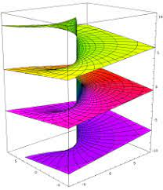
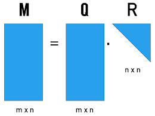
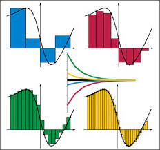

Grado en Matemáticas: Tercer Curso
Volver a Matemáticas
Grupos y anillos
Ángel del Río
Primera parte de teoría
Segunda parte de teoría
Ejercicios resueltos
Tareas

Funciones de Variable Compleja
Víctor Jiménez
Apuntes de teoría (pdf)

Análisis Numérico Matricial
Antonio Pallares
Entregas de prácticas
Entregas de teoría

Cálculo Numérico
Teresa Signes
Entregas de prácticas